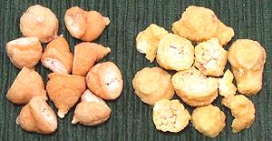

SAFARI
Users
Sevai
- [009 Shyavige]In southern India, particularly in Tamil Nadu, rice noodles are often made fresh. That's a bit of a hassle here, especially since the necessary wet grinders, while common in Indian households, are scarce and expensive here in California. A powerful blender could be used, but the result isn't quite the same. Here, we can just use easily available Asian dried rice noodles, available in numerous sizes. Also, fresh rice noodles in sheets and wider sizes are available in Southeast Asian and Korean markets.
The photo shows the thinnest (0.027 inch / 0.75 mm diameter), but
thicker ones are often used in India. Just make sure you get rice
noodles, not bean starch noodles - they look identical dried, but
nothing alike when cooked. Rice noodles are often used for breakfast
dishes, but can appear in other roles as well. They are often flavored
with tamarind, lemon, coconut, and spices.
Seviyan
- [036 Xevaiyan, "Vermicelli"]This durum wheat noodle is often called "vermicelli" in English, but differs from both Italian vermicelli, which is a little lager than spaghetti, and American vermicelli, which is a bit smaller than spaghetti. This pasta is more equivalent to Capellini (angel hair) in size (0.040 inch / 1.0 mm) and is identical in diameter to the "vermicelli" so popular in Armenia.
This pasta isn't much shipped from India, and why would it be when
Capellini is so easily available in North America? In most Indian
recipes, it is broken to 2 or 3 inches and roasted in oil with spices
until a light golden color before adding liquids. In India it is also
sold "pre roasted". It is used for breakfast dishes, usually cooked
with water, and for sweet desert dishes, usually cooked with milk.
Wadi
- [339 Vadi, Bori, Bodi, Mungaudi] These dumplings can serve as a meat substitute in recipes. No, they're not just like meat, but can take it's place similarly to textured soy protein, and they are probably a lot healthier than the heavily processed soy. They are made of various mixes of ground pulses, and formed in various shapes. They are particularly popular in northern India, where they are made in the winter and sun dried for use the rest of the year. If dried in the hot summer sun they get too hard and don't cook right.
Those on the left are Chora Wadi, made from small dark green chickpeas
(peeled), and those on the right are made are Moong Wadi, made from mung
beans (peeled). Urad dal is also often used. The chana are about
0.55 inch diameter at the base, and the Moong about 0.63 inch diameter
at the base. Both were purchased from a large Indian market in
Glendale, California.